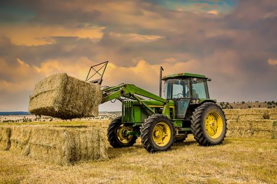

Organic Agriculture
Organic agriculture is a production system that sustains the health of soils, ecosystems and people. It relies on ecological processes, biodiversity and cycles adapted to local conditions, rather than the use of inputs with adverse effects. Organic agriculture combines tradition, innovation and science to benefit the shared environment and promote fair relationships and a good quality of life for all involved
Learn More